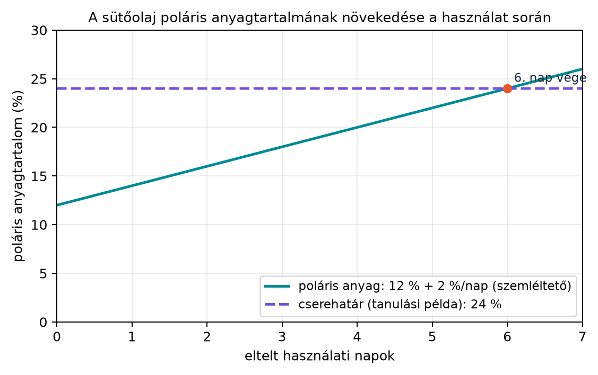

A cukrászati nyersanyagok – a liszt, a tej, a tojás, a csokoládé, az olajos magvak – ritkán okoznak látványos kémiai mérgezést, ezért a kémiai szennyezők sokszor kevesebb figyelmet kapnak, mint a mikrobiológiai veszélyek. Pedig a kémiai anyagok egy része hosszú időn át, kis adagokban is terheli a szervezetet, és a legtöbb ilyen anyag a sütés közben nem bomlik el, hanem a késztermékben marad. A cukrász szakmában ezért a kémiai élelmiszerbiztonság nem abból áll, hogy minden anyagot laboratóriumban vizsgálunk, hanem abból, hogy megbízható nyersanyagot vásárolunk, a technológiai hőmérsékleteket ellenőrizzük, és a használt sütőolajat fegyelmezetten kezeljük.
Szemléletes kép. Képzeld el a fánksütő üstöt egy forgalmas szombat reggelen. Az olaj világos, szinte híg, a fánkok aranysárgára sülnek. Délutánra az olaj lassan sötétedik, kissé sűrűbbé válik, a friss fánk felülete is gyorsabban barnul, az üzemben égett, fanyar szag terjeng. Ha ilyenkor az olajat nem cserélik, akkor már nemcsak az íz romlik, hanem a fánk felületén technológiai szennyezők is megjelenhetnek. Ugyanez történik a sütőben: a túl forró, túl hosszú sütés a sütemény barnulását és az akrilamid képződését is fokozza.
Definíció. Kémiai szennyező minden olyan vegyület, amely nem szándékosan kerül az élelmiszerbe, hanem a termelés, a környezet vagy a feldolgozás során jut bele, és a fogyasztó egészségét károsíthatja. Technológiai szennyező az a kémiai szennyező, amely a feldolgozás – például hőkezelés, sütés, olajban sütés – során képződik.
A cukrászüzemben a kémiai szennyezők három nagy csoportját kell ismerni:
Az alábbi táblázat áttekinti a fő csoportokat és a cukrászati kapcsolódásukat.
| Szennyezőcsoport | Jellemző forrás | Cukrászati kapcsolódás | Egészségügyi kockázat | Elsődleges védekezés |
|---|---|---|---|---|
| Növényvédőszer-maradék (peszticidmaradék) | növényi nyersanyag | liszt, gyümölcs, olajos mag, kakaóbab | hormonális, idegrendszeri, daganatkockázat hosszú távon | beszállítói garancia, megbízható forrás |
| Állatgyógyászati szermaradék | állati termék | tej, tejszín, tojás, vaj | antibiotikum-maradék esetén allergia, rezisztencia | beszállítói garancia, tanúsítvány |
| Toxikus nehézfémek | környezet, talaj, ipar | kakaópor, csokoládé, olajos magvak, tejpor | ólom, kadmium, higany: ideg- és vesekárosodás | határérték szerinti alapanyag-beszerzés |
| Dioxinok, PCB-k | környezetszennyezés, zsírban oldódó vegyületek | vaj, tejszín, zsiradék, csokoládé | immun- és hormonrendszeri hatás | beszállítói tanúsítvány, zsírtartalmú anyagok ellenőrzése |
| PAH-ok | égés, füstölés, erős pirítás | megégett olaj, elszenesedett termék, füstölt ízesítés | rákkeltő hatás | a sütőolaj hőfokának és cseréjének fegyelme |
| Akrilamid | sütés, pirítás során | sütemények, fánk, mézes tészták, pirított magvak | valószínűleg rákkeltő, neurotoxikus | alacsonyabb hőfok, aranybarna szín |
Továbbvitt eredmény. A sütőolaj-szabályokat és az akrilamid-csökkentést a Gyúrt és kevert élesztős uzsonnasütemények; a fánk alfejezetben, a sütő hőmérséklet-szabályozását a A sütés: hőátadás, változások a tésztában, sütési veszteség és sütés utáni műveletek alfejezetben, a mikotoxinokkal kapcsolatos hasonló beszerzési szabályokat a Biológiai eredetű méreganyagok: mikotoxinok, hisztamin, mérgező növények és gombák alfejezetben, a csomagolóanyagok kémiai biztonságát pedig a Csomagolóanyagok és élelmiszerrel érintkező felületek; adalékanyagok szerepe alfejezetben alkalmazzuk.
A kémiai szennyezőkre a „nulla tolerancia” a gyakorlatban nem elérhető, mert a természetes környezetben mindenütt van valamennyi szennyező anyag. A szabályozás ezért felső határértékeket állapít meg: ha a termék a megengedett határ alatt marad, az átlagos fogyasztás mellett nem jelent elfogadhatatlan kockázatot. A kockázatértékelést az Európai Élelmiszerbiztonsági Hatóság (EFSA) végzi; a határértékeket uniós rendeletek határozzák meg.
Jogszabály. Az élelmiszerekben előforduló szennyezők felső határértékeit uniós szennyezőanyag-rendelet határozza meg: az (EU) 2023/915 rendelet (a korábbi 1881/2006/EK helyett); a rendelet mellékletei élelmiszerkategóriánként és szennyezőanyagonként adnak határértékeket. (ellenőrizendő: hatályos szöveg (EU) 2023/915, az élelmiszerkategóriák és a határértékek) Az élelmiszer-vállalkozó felel azért, hogy a forgalomba hozott termék megfeleljen ezeknek az előírásoknak. A cukrászüzemben ez azt jelenti, hogy a beszállítói dokumentációt, a tanúsítványokat és a nyomonkövetést úgy kell vezetni, hogy a nyersanyagok eredete visszakereshető legyen.
A gyakorlatban a cukrász nem tud minden lisztet vagy csokoládét laborba küldeni. Ezért az elsődleges védekezés a beszállító-kiválasztás és a nyomonkövetés. A megbízható beszállító igazolja, hogy a terméke megfelel a hatályos határértékeknek; a cukrász pedig a szállítólevéllel, tételszámmal és az átvételi ellenőrzés jegyzőkönyvével tudja utólag bizonyítani, honnan származott az adott alapanyag.
A növényi nyersanyagok – gabona, gyümölcs, kakaóbab, olajos mag – termesztése során növényvédő szereket használnak. Ha a betakarított terményben a maximális szermaradék-határ (MRL) feletti maradék marad, az élelmiszer nem hozható forgalomba. A cukrász a kész lisztben, aszalt gyümölcsben vagy mandulában már nem látja ezeket a vegyületeket, ezért a termelő és a feldolgozó felelőssége a határérték betartása. A tejet, tejszínt, tojást, vajat termelő állatok gyógykezelése során használt állatgyógyászati készítmények is bekerülhetnek az élelmiszerbe: például antibiotikum-maradék a tejben, ha a várakozási időt nem tartották be. Ezért a tejtermékeknél a tanúsítvány, a tojásnál a tételazonosítás és a beszállítói garancia a legfontosabb.
Megjegyzés. A gyümölcsök megmosása és hámozása csökkentheti a felületi peszticidmaradékot, de a feldolgozott termékekben – aszalt gyümölcsben, olajos magvakban, kakaóporban – a maradékok akár be is sűrűsödhetnek. Emiatt az aszalt gyümölcs és a kakaópor beszerzésénél különösen fontos a megbízható forrás.
A toxikus nehézfémek – például az ólom, a kadmium és a higany – a talajból, az ipari kibocsátásból és a takarmányból kerülnek a nyersanyagokba. A kadmium például a kakaóbabban, a magvakban és a gabonában halmozódhat fel; az ólom a régi szennyezésű területekről és a légköri ülepedésből származik. A dioxinok és a PCB-k olyan zsíroldékony, nagyon lassan lebomló környezeti szennyezők, amelyek a zsíros élelmiszerekben – vajban, tejszínben, csokoládéban, zsíros halakban – halmozódnak fel. A cukrászüzem ezeket a vegyületeket nem tudja kivonni a termékből, ezért az egyetlen érdemi védekezés a határértéknek megfelelő nyersanyag beszerzése.
Jogszabály. A toxikus nehézfémekre, dioxinokra és PCB-kre a szennyezőanyag-rendelet ((EU) 2023/915; ellenőrizendő: hatályos szöveg) állapít meg felső határértékeket; a hatóság kockázatalapú mintavételezéssel ellenőrzi a forgalomba hozott termékeket. (ellenőrizendő: hatályos mellékletek, kategóriák) Az üzemi ellenőrzés során a tételszintű nyomonkövetés és a beszállítói tanúsítvány a bizonyíték.
A technológiai szennyezők már a cukrászüzemben, a feldolgozás során keletkeznek. A policiklusos aromás szénhidrogének (PAH-ok) égés, füstölés, erős pirítás vagy zsír túlhevítése során képződnek. A sütőben elszenesedő morzsák, a megégett olaj, a túl erősen pirított olajos magvak és a füstölt ízesítésű alapanyagok növelik a PAH-tartalmat. A fánkban vagy süteményben ezért nem szabad megégett, fekete felületű olajban sütni, és a sütőfelületről a szenesedett maradékot rendszeresen el kell távolítani.
A nitrózaminok képződéséhez nitrit/nitrát és aminok együttes jelenléte kell. Jellemzően pácolt, füstölt húskészítményekben, sajtokban keletkezhetnek. A cukrászatban a sós, sonkás töltelékek, szalámis teasütemények miatt van jelentőségük; a védekezés az ilyen jellegű töltelékeknél is a megbízható alapanyag-beszerzés és a hőkezelés fegyelme, nem pedig a „szenesítő” sütés.
Definíció. A transz-zsírsavak olyan telítetlen zsírsavak, amelyekben a kettős kötés térszerkezete transz elrendeződésű; ez a forma a szervezetben kedvezőtlen hatású, például növeli a szív- és érrendszeri betegségek kockázatát.
A transz-zsírsavak fő ipari forrása a növényi zsiradékok részleges hidrogénezése, amelyet régebben a margarinok és sütőzsiradékok keményítésére, kenhetőségük és hőstabilitásuk javítására használtak. Kisebb mennyiségben a zsírok többszöri, magas hőmérsékletű hevítése során is képződhetnek. A cukrászüzemben ezért a „növényi zsiradék” vagy „sütőmargarin” beszerzésekor a címkén és a gyártói adatlapon ellenőrizni kell a transz-zsírsav-tartalmat, és a sütőolajat sem szabad indokolatlanul túlhevítve újrahasználni.
Jogszabály. Az uniós szabályozás meghatározza az élelmiszerek zsírtartalmában megengedett legnagyobb transz-zsírsav-mennyiséget; a részben hidrogénezett zsiradékok használatát a gyakorlatban ez erősen korlátozza. (ellenőrizendő: 2019/649/EU rendelet és a hatályos határérték) A cukrászati vajkrémeknél, sütőzsiradékoknál és tésztamargarinoknál a gyártói adatlapot kell figyelembe venni.
Definíció. Az akrilamid olyan technológiai szennyező, amely keményítőben gazdag élelmiszerekben – gabonatermékekben, burgonyatermékekben – magas hőmérsékletű, alacsony nedvességtartalmú sütés, pirítás során képződik. Kialakulásában a nyersanyagban lévő aszparagin nevű aminosav és a redukáló cukrok – például glükóz, fruktóz – Maillard-reakciója vesz részt.
A cukrászatban az akrilamid szempontjából a sütemények, a fánk, a kekszek, a mézes tészták, a pirított olajos magvak és a felületükön barnított termékek a legfontosabbak. Az akrilamid-képződés akkor gyorsul fel, ha:
A jogszabály a vállalkozókat akrilamid-csökkentő intézkedések alkalmazására kötelezi, nem egyetlen univerzális határértéket ír elő, hanem az adott termékkategóriára fontos, betartandó irányértékeket és folyamatszabályokat.
Jogszabály. Az uniós rendelet az élelmiszer-vállalkozók számára referenciaértékeket és mérséklő intézkedéseket ír elő az akrilamid-képződés csökkentésére; a sütő- és vendéglátóipari tevékenységnél ez a nyersanyag-választás, a hőmérséklet-idő beállítás és a termékszín ellenőrzésének rendjét jelenti. (ellenőrizendő: 2017/2158/EU rendelet és hatályos módosításai)
A cukrászüzemi gyakorlatban az akrilamid-minimalizálás legegyszerűbb, minden nap alkalmazható módjai:
A sütőolaj-példa mutatja meg azt a folyamatot, amelyet a későbbi fánksütésnél alkalmazni kell.

Az ábra azt mutatja, hogy a használt sütőolajban a kémiai bomlástermékek aránya napról napra nő, és a görbe a 6. használati nap végén eléri a 24 %-os tanulási cserehatárt (szaggatott vonal); a hetedik nap reggelén már friss olaj kell. A valóságban a növekedés a túlhasználat felé haladva gyakran meredekebb. A sütőolaj-csere ezért nem a látványos füst megjelenésekor, hanem a mért határérték közelében esedékes.
A fánk, csöröge, churros vagy más zsiradékban sült termék készítésekor a sütőolaj kémiai minősége legalább olyan fontos, mint a termék mikrobiológiai biztonsága. A forró olajban a hő, a víz és a tésztamorzsák hatására az olaj bomlása felgyorsul. Kialakulnak benne polimer vegyületek, szabad zsírsavak és poláris anyagok, amelyek a késztermékbe kerülhetnek. A használt sütőolaj minőségét ezért a gyakorlatban poláris anyag tartalommal jellemzik.
Szabály. A sütőolajat csak az előírt hőmérséklet-tartományban, jellemzően 170–180 °C között melegítsük; a pontos érték a terméktől és a berendezéstől függ. (ellenőrizendő: gyártói adatlap, üzemi utasítás, jogszabályi útmutató) Minden sütési nap elején és sűrű termelés közben ellenőrizzük a hőmérsékletet, az olaj színét, szagát, habzását, és lehetőség szerint mérjük a poláris anyag tartalmát.
Definíció. A poláris anyag tartalom a használt sütőolajban felhalmozódott, erősen poláros kémiai bomlástermékek tömegaránya. A friss olaj értéke alacsony; a használat során az érték növekszik. A cserehatárt a gyártói útmutató vagy az üzemi HACCP-kézikönyv adja meg; tanulási példaként gyakran 24–25% körüli értéket használnak. (ellenőrizendő: hatályos útmutató)
A sütőolaj kezelésének üzemi szabályai:
Tilos. A megégett, erősen füstölő, habosodó vagy a cserehatárt meghaladó sütőolajban tovább sütni tilos. Az ilyen olajból készült terméket is vissza kell tartani, mert a kémiai szennyezők már a késztermékben maradhatnak.
Figyelem. A forró sütőolaj súlyos égési sérülést okoz. A sütőolaj szűrése előtt áramtalanítsuk a berendezést, és várjuk meg, amíg az olaj a biztonságos hőmérsékletre hűl; a műveletet csak oktatás után, megfelelő hosszú szárú eszközzel és hosszú ujjú munkaruhában végezzük.
Számítás – sütőolaj-csere tervezése. Egy üzemben a sütőolaj poláris anyag tartalmát reggel 12%-nak mérik. Az üzemi belső szabály szerint 24%-nál cserélni kell; ez tanulási érték, nem hatósági előírás. Átlagos termelés mellett naponta 2 százalékponttal nő a poláris anyag tartalom. Hány napig használható az olaj?
Megoldás. Elérhető növekedés:
A napok száma:
A hatodik nap végén az olaj eléri a 24%-ot, ezért a hetedik nap reggelén már friss olajat kell használni. A gyakorlatban a cserét szűréssel, méréssel és dokumentálással együtt tervezzük.
Számítás – sütőhőmérséklet-kalibrálás. A sütő beállított hőmérséklete 190 °C, de a kalibrált tűszonda szerint a tényleges hőmérséklet 197 °C. Az akrilamid-csökkentés érdekében a tényleges sütési hőmérsékletet 185 °C-ra szeretnénk csökkenteni. Mennyit kell visszavenni a sütő beállított értékéből?
Megoldás. A beállított és a tényleges hőmérséklet eltérése:
Mivel a sütő a beállítottnál 7 °C-kal melegebb (a kijelzés 7 °C-kal kevesebbet mutat), a kívánt 185 °C tényleges hőmérséklethez a beállított érték:
A sütőn tehát 178 °C-ot állítunk be, és a kalibrált hőmérővel ellenőrizzük, hogy a sütő valóban 185 °C-ot tart-e. A túl magas hőmérséklet akrilamid-képződést és egyenetlen barnulást is okozhat.
A kémiai szennyezők szempontjából a cukrászüzemben a legfontosabb ellenőrzési pontok:
Hiba: A fánk felülete sötétbarna, a belseje nyers,
az olaj füstöl.
Ok: A sütőolaj hőmérséklete jóval 180 °C fölé
emelkedett, vagy az olaj már túlhasznált, bomlástermékekkel teli.
Megelőzés: Az olaj hőmérsékletét sütés közben is
mérjük; a túlhasznált olajat időben cseréljük.
Javítás: A sütést azonnal leállítjuk, az olajat nem
használjuk tovább, a hibás fánkokat leválasztjuk.
Hiba: A keksz vagy mézeskalács keserű, a felülete
fekete foltos.
Ok: A sütő hőmérséklete túl magas, a sütési idő túl
hosszú, vagy a sütőlemezen szenesedett maradék van.
Megelőzés: A recept szerinti alsó hőmérsékletet
használjuk, és a sütőlemezt rendszeresen tisztítjuk.
Javítás: A hibás tételt nem szabad „visszadarabolni”; a
további sütéseket alacsonyabb hőmérsékleten, világosabb színig
folytatjuk.
Hiba: A sütőolaj poláris anyag tartalmát senki nem
méri, a napló hiányos.
Ok: Nincs kialakult ellenőrzési rutin, a mérőeszköz
nincs a sütő mellett.
Megelőzés: A mérőeszközt a sütőhöz készítik, a
műszakvezető felelőst jelöl ki, a naplót naponta ellenőrzik.
Javítás: A hiányzó méréseket azonnal pótolni kell, a
használt olaj minőségét pedig kétes esetben friss olajra kell
cserélni.
Egy cukrászüzemben a vendégek panaszkodni kezdtek, hogy a fánk keserű, a felülete túl barna, és a terméknek enyhén égett szaga van. A műszakvezető megvizsgálta a sütőolajat: sötétbarna, sűrű, és alacsony hőmérsékleten is füstölt. A poláris anyag mérő a cserehatár felett mutatott; a sütési naplóban csak reggeli hőmérséklet szerepelt. A vezető azonnal leállította a fánksütést, a készterméket visszatartotta, az olajat lecserélte. Az eset után minden sütőhöz poláris anyag mérőt és olajnaplót rendeltek, a dolgozókat pedig rövid oktatásban részesítették. A hiba gazdasági tanulsága is fontos: egy olajcsere olcsóbb, mint az elrontott tétel selejtezése és a hatósági eljárás.
1. feladat (A). Nevezd meg a kémiai szennyezők négy fő csoportját, és mindegyikre írj egy-egy példát!
2. feladat (A). Mit jelent a maximális szermaradék-határ (MRL), és ki felel az élelmiszerben betartásáért a cukrászüzemben?
3. feladat (B). Egy sütőolaj poláris anyag tartalmát reggel 14%-nak mérik. Az üzemi cserehatár 25% (tanulási példa). Átlagos napi növekedés 1,5 százalékpont. Hány napig használható az olaj?
4. feladat (B). A sütő beállított hőmérséklete 185 °C, de a kalibrált mérő szerint a tényleges hőmérséklet 193 °C. Az akrilamid-csökkentés miatt a tényleges sütési hőmérséklet 175 °C legyen. Mennyit kell beállítani a sütőn?
5. feladat (C). Egy fánksütő olaj sötétbarna, habzik, a fánk felülete gyorsan barnul, de a belseje nyers. Elemezd a hibát: mi a legvalószínűbb ok, milyen kémiai veszélyt jelent, mi a helyesbítő tevékenység?
6. feladat (D). Tervezz sütőolaj-ellenőrzési naplót egy napi fánksütéshez! Add meg: mikor, milyen eszközzel, milyen gyakran méred a hőmérsékletet és a poláris anyag tartalmat; milyen határértéknél cserélsz olajat; mit írsz a naplóba.
Önellenőrzés – válaszok
1. feladat megoldása. A négy fő csoport: termelésből származó maradékok (pl. peszticidmaradék), környezeti szennyezők (pl. ólom, kadmium, dioxin, PCB), technológiai szennyezők (pl. akrilamid, PAH-ok), valamint – a technológiához kötve – a transz-zsírsavak önállóan is kiemelhetők. A hivatalos csoportosítás a szabályozásban részletesebb, de a vizsgán a fenti logikus felosztás elfogadható.
2. feladat megoldása. Az MRL a növényvédőszer-maradékok megengedett maximális szintje az élelmiszerben. A termelő és a feldolgozó felel az MRL betartásáért; a cukrász a megbízható beszállító kiválasztásával, a bizonylatok és tanúsítványok megőrzésével tudja biztosítani, hogy alapanyagai megfelelőek legyenek.
3. feladat megoldása. Megengedett növekedés: 25 – 14 = 11 százalékpont. Napok: 11 / 1,5 = 7,33 nap. Az olaj 7 napig használható, a 8. napra a növekedés már 25% fölé vinne, ezért a 7. nap végén cserélni kell.
4. feladat megoldása. Eltérés: 193 – 185 = 8 °C; a sütő 8 °C-kal melegebb a beállítottnál. Kívánt tényleges hőmérséklet 175 °C, ezért beállítandó: 175 – 8 = 167 °C. A sütőt 167 °C-ra kell állítani, majd a kalibrált hőmérővel ellenőrizni.
5. feladat megoldása. Legvalószínűbb ok: az olaj túl magas hőmérsékletű és/vagy túlhasznált, ezért poláris anyag tartalma a cserehatár felett van. Kémiai veszély: PAH-ok, bomlástermékek, valamint a túlzott barnulás miatt fokozott akrilamid-képződés. Helyesbítő tevékenység: a sütést leállítani, az olajat lecserélni, a hibás fánkot kivenni, a naplóban rögzíteni, és a továbbiakban a hőmérsékletet és a poláris anyag tartalmat méretni.
6. feladat megoldása. A tervnek tartalmaznia kell: reggel induláskor friss olaj esetén hőmérséklet-mérés, majd a sütési hőmérsékletet (pl. 175 °C) tartani; a poláris anyag tartalmat naponta legalább egyszer, erős forgalomban kétszer mérni; a cserehatár elérésekor olajat cserélni; a naplóba beírni a dátumot, a mért hőmérsékletet, a poláris anyag értéket, az olaj színét/szagát, a szűrés időpontját és az olajcserét, valamint a felelős nevét.
A kémiai szennyezők nem szándékosan kerülnek az élelmiszerbe, és a legtöbbjük a sütés során sem bomlik el. A termelésből származó peszticid- és állatgyógyászati szermaradékok, a környezeti nehézfémek, dioxinok és PCB-k ellen a cukrász elsősorban beszállítói garanciával és nyomonkövetéssel védekezik. A technológiai szennyezők – PAH-ok, nitrózaminok, transz-zsírsavak, akrilamid – a feldolgozás során keletkeznek. A legfontosabb gyakorlati szabály: a sütőolajat 170–180 °C körül tartani, a poláris anyag tartalmát mérni, a megégett, habos olajban sütni tilos. Az akrilamid képződését a sütő hőmérsékletének kalibrálásával, a sütési idő csökkentésével és az aranysárga szín elérésével lehet mérsékelni. A késztermék visszatartása és a dokumentálás a kémiai hibák esetén is a HACCP-helyesbítés része. A fánksütés és a sütőszabályok ezt a tudást használják fel a későbbi technológiai alfejezetekben.